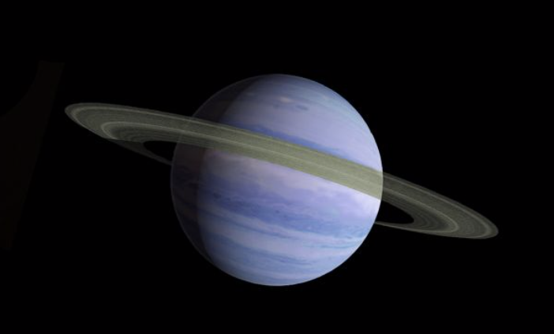
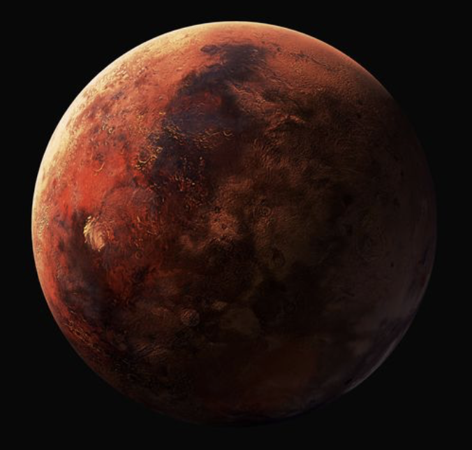
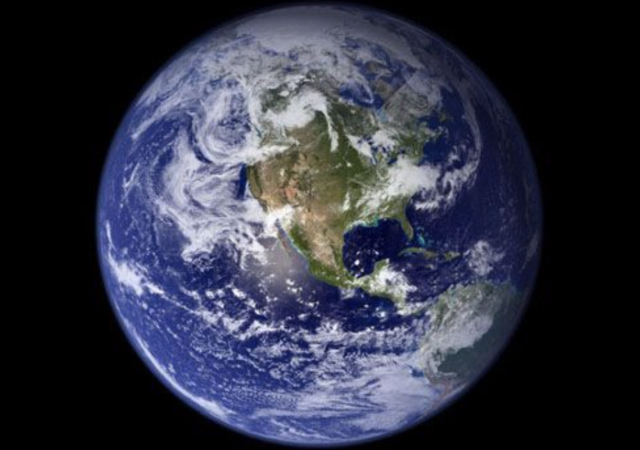

Saturn
Saturn is the sixth planet from the Sun and the second-largest in the Solar System, after Jupiter. It is a gas giant with an average radius of about nine times that of Earth.

Mars
Mars is the fourth planet from the Sun and the second-smallest planet in the Solar System, being only larger than Mercury. It is often referred to as the "Red Planet".

Earth
Earth is the third planet from the Sun and the only astronomical object known to harbor life. According to radiometric dating estimation and other evidence, Earth formed over 4.5 billion years ago.